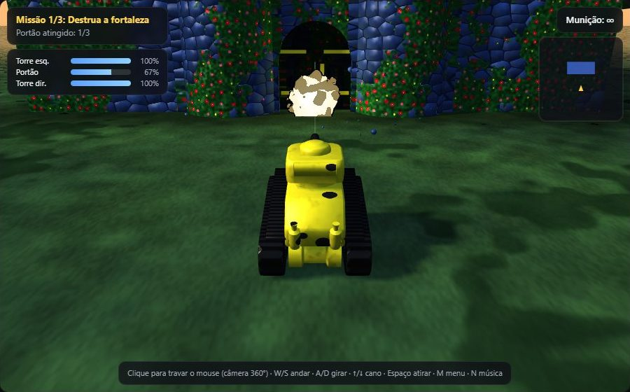
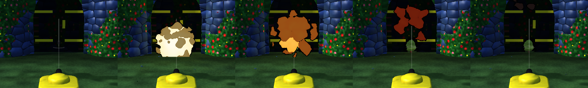
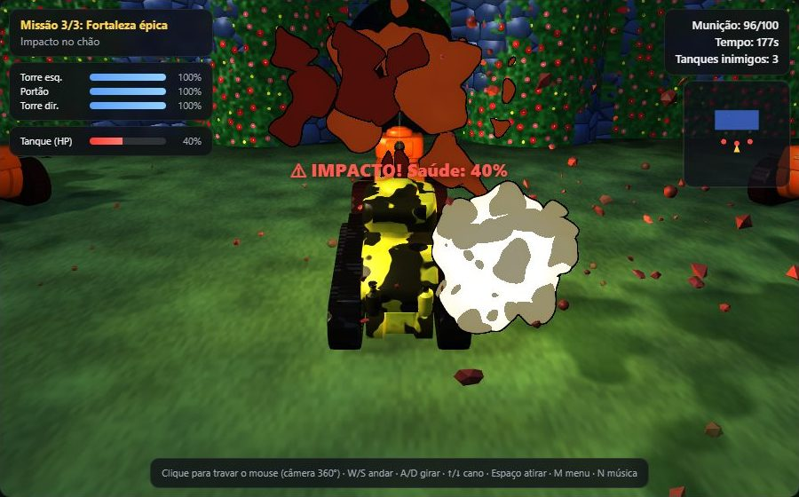

Computação Gráfica — FECAP
Jogo 3D de tanque renderizado com WebGPU: destruir a fortaleza a tiros de canhão.

Prompts, respostas e etapas utilizadas: cada prompt vira uma entrada em docs/ai-log.md
| # | Data | Prompt (resumo) | Resultado | Arquivos |
|---|---|---|---|---|
| 1 | 28/09 | Organizar o protótipo: módulos, git, README, CLAUDE.md | Refatorado sem mudar o jogo (4 capturas idênticas pixel a pixel) | src/*.js |
| 3 | 28/09 | Portar o shader "Cartoon explosion" (Shadertoy) para WGSL | Shader WGSL + billboard 3D; ≤ 0,03% de diferença do GLSL | explosion.js |
| 17 | 04/10 | Comparar Claude × Gemini × ChatGPT na conversão do shader | Três códigos compilados e testados | analise-ias.md |
| 23 | 04/10 | Menu e 3 missões com progressão | Missões, HUD, inimigos; 22 → 54 fps | missions.js |
| 24 | 05/10 | Explosão 3D com partículas, luz dinâmica e som | ParticleEmitter, luzes no shader, Tone.js | explosion-*.js |
| 25 | 05/10 | Cores realistas e turbulência no shader | 5 fases de cor, fBm Perlin 3D | explosion.js |
Problemas encontrados e soluções, todos registrados no ai-log e nas mensagens de commit
ProblemaO índice da paleta podia sair do array; divisão por zero em t = 0.
Soluçãoclamp no índice e repeat ≥ 0.001.
ImpactoSem leitura fora do array nem NaN no 1º quadro.
ProblemaO tiro desce inclinado: sai ~0.87 abaixo de onde entrou, fora do raio do buraco.
SoluçãoBuraco centrado onde a trajetória cruza o meio da parede.
Impacto2º tiro no mesmo lugar atravessa.
ProblemaCache do navegador + um servidor antigo em IPv6 respondendo na porta 8000.
Soluçãoserve.py: sem cache (no-store), IPv4 + IPv6.
ImpactoToda mudança aparece ao recarregar.
ProblemaMedido desligando partes: o contorno da explosão recalculava o efeito 4× por pixel.
SoluçãoContorno pela derivada de tela (fwidth).
ImpactoMissão 3: 22 → 54 fps.
ProblemaLaranja/vermelho quase não apareciam; fBm de 3 oitavas derrubou para ~35 fps.
SoluçãoFumaça segue phaseColor; fBm com 2 oitavas.
Impacto5 fases visíveis, mesmo fps de antes.
Claude vs Gemini vs ChatGPT: mesmo prompt (converter o shader para WGSL), código compilado e testado
| Aspecto | Claude | Gemini | ChatGPT |
|---|---|---|---|
| Compila o WGSL | ✅ Sim | ✅ Sim | ✅ Sim |
| Funciona como descrito | ✅ Sim | ❌ Não buffer de 192 B, struct exige 208 | ✅ Sim com aspect = 1 |
| Pixels diferentes do GLSL | ≤ 0,03% | 12–31% | ≤ 0,03% |
| Explicação | Boa | Fraca 2 afirmações falsas | Ótima |
| Testou o próprio resultado | ✅ Sim (único) | ❌ Não | ❌ Não |
Shader externo: "Cartoon explosion", Shadertoy X3dGz2 → WGSL
src/explosion.js, com fonte e adaptações no cabeçalho

mod reimplementado (o % do WGSL trunca)const (WGSL não tem default)clamp no índice da paleta; repeat ≥ 0.001discard no lugar de blendingfwidth: ~5× menos trabalho (22 → 54 fps)vec3f + f32)App pronto para a apresentação

Documentação e comunicação
docs/Resposta 1 Gemini.txt / ChatGPT.txt: respostas originaisOnde está a evidência de cada critério
| Critério | Pts | Evidência | Status |
|---|---|---|---|
| 1. Registro de uso de IAs | 2,5 | docs/ai-log.md | ✅ Entregue |
| 2. Erros e correções | 2,5 | ai-log (seções "Problemas") + commits | ✅ Entregue |
| 3. Comparação entre IAs | 2,0 | docs/analise-ias.md | ✅ Entregue |
| 4. Origem do shader e adaptações | 1,0 | cabeçalho de src/explosion.js + README | ✅ Entregue |
| 5. App funcional e estável | 1,5 | demonstração ao vivo | ✅ Entregue |
| 6. Clareza da apresentação | 0,5 | estes slides + documentação | ✅ Entregue |
| Total | 10,0 | 6 de 6 critérios cobertos | ✅ |
Fortress Assault — Computação Gráfica, FECAP — 05/10/2026